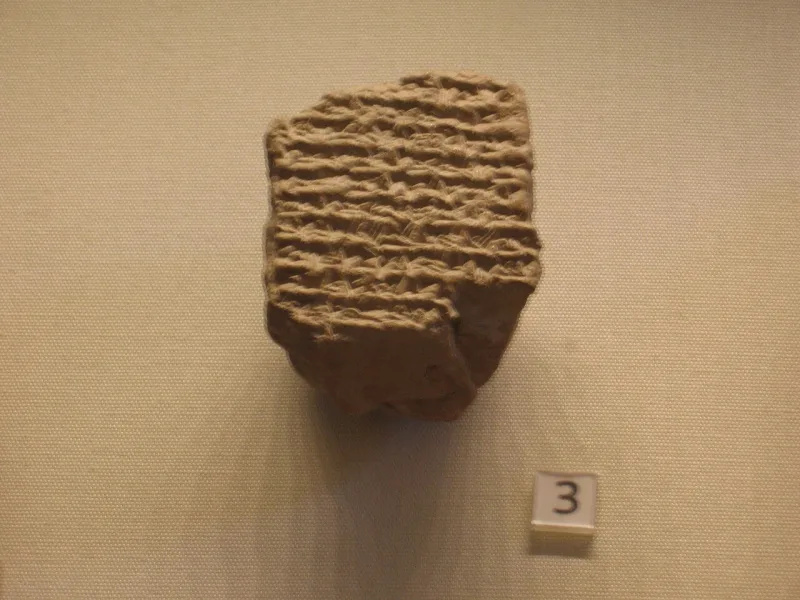
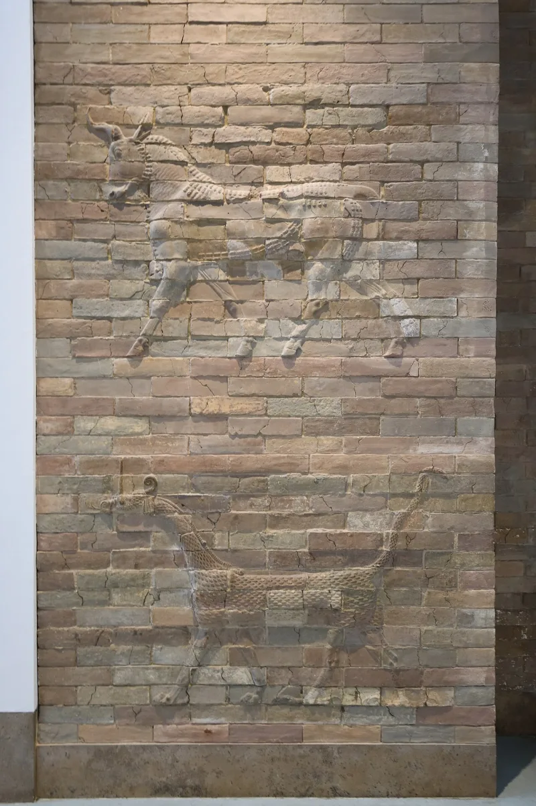

No good counter-argument has been published by the Watchtower.
Doubt about 607 was spreading among members. So the Watchtower published a rare two-part defense.
It ran on Oct 1 and Nov 1, 2011, under the title "When Was Ancient Jerusalem Destroyed?" It was unsigned, with endnotes.
VAT 4956 carries about 30 sky observations. They date Nebuchadnezzar's 37th year to 568/567 BCE.
The article moves it to 588. It sets the planet sightings aside, suggesting the signs could have been misread.
It keeps selected moon positions it says fit 588. It highlights an eclipse of July 15, 588 BCE.
This is the Watchtower at its most engaged with evidence. The articles cite the main publications on VAT 4956.
They admit openly that most scholars hold 587. They offer something testable: the diary is a later copy, its planet signs are unclear, and its month-by-month moon positions were found to fit 588 in all 13 sets.
An eclipse did fall on July 15, 588 BCE. If the 37th year is 588, the 18th year is 607, and tablet and Scripture agree.
A method that deletes the data that would disprove it is not chronology. The planet sightings are exactly the ones that cannot fit 588.
The tablet's full eclipse description, its timing before sunrise and its size, matches 568. Moving the 37th year to 588 also collides with the reign lengths of Nebuchadnezzar's successors, Amel-Marduk and Neriglissar, fixed by thousands of dated tablets.
The article never mentions that. Carl Olof Jonsson published a line-by-line reply, showing that Part One quoted its scholars selectively.
Strong for you. No astronomer signed the calculation, because no author is named.
And the articles concede the score themselves: most scholars say 587. Members are being asked to overrule that.
"The article keeps the moon data and drops the planet data from the same tablet. What is the rule that decides which half to believe?"


Their 2011 articles cite the sources, admit most scholars say 587, and offer a test.
These articles are the Watchtower at its most engaged with evidence. They cite the primary publications on VAT 4956. They admit openly that most scholars hold 587. And they offer a testable counter-idea.
The claim is that the diary is a later copy, and that its planetary signs are unclear. Meanwhile its month-by-month lunar positions were found by their researchers to match 588 BCE 'in all 13 sets.' A lunar eclipse did occur on July 15, 588 BCE, as they say. If the 37th year were 588, the 18th year would be 607. Tablet and Scripture would then agree. The articles frame this as faith giving Scripture the benefit of the doubt wherever secular data admits any doubt.
Strong for you. They keep the moon data and drop the planet data.
A method that deletes the data that falsify the idea, and keeps the data that permit it, is not chronology. The planet sightings are precisely the ones that cannot fit 588.
The eclipse 'fit' ignores that lunar eclipses recur constantly. The tablet's full eclipse account, its time before sunrise and its size, matches 568 and not 588. Moving Nebuchadnezzar's 37th year to 588 also collides with the reign lengths of his successors, which are fixed by dated tablets. The article never addresses that.
No astronomer signed the sum, because no author is named. And the one thing the articles do concede is itself the takeaway. Most scholars say 587. The Society knows the score, and asks members to overrule it.